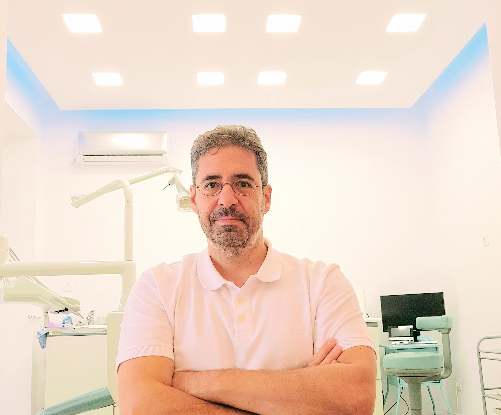

Με βαθιά αφοσίωση στην επιστήμη και τον άνθρωπο, ο Δρ. Άγγελος Μοσχόπουλος ξεκίνησε την ακαδημαϊκή του πορεία στο Πανεπιστήμιο McGill, ολοκληρώνοντας το 1992 τις σπουδές του στη Βιολογία, με εξειδίκευση στη Μικροβιολογία και την Ανοσολογία.
Η αγάπη του για την έρευνα τον οδήγησε στο Ελληνικό Ινστιτούτο Παστέρ, όπου εργάστηκε ως ερευνητής για δύο χρόνια, προτού αφοσιωθεί στην Οδοντιατρική, λαμβάνοντας το πτυχίο του από το Πανεπιστήμιο Semmelweis το 1999.
Ο Δρ. Μοσχόπουλος ασκεί την οδοντιατρική στα νότια προάστια από το 2002, καλωσορίζοντας τους ασθενείς του στην προσωπική του κλινική εμφυτευμάτων στο Παλαιό Φάληρο. Παράλληλα, από το 2003 αποτελεί Επιστημονικό Σύμβουλο στο τμήμα Στοματικής και Γναθοπροσωπικής Χειρουργικής του Νοσοκομείου Metropolitan.
Εκεί έχει αναπτύξει υψηλή εξειδίκευση και εμπειρία στις θεραπείες με οδοντικά εμφυτεύματα, δίνοντας ιδιαίτερη έμφαση στην άρτια διαχείριση και την πλήρη αισθητική και λειτουργική αποκατάσταση του χαμόγελου.
Με όραμα την προσφορά στην κοινωνία, το 2001 συνέβαλε καθοριστικά στην ίδρυση της Οδοντιατρικής Κλινικής των Δημοτικών Ιατρείων Παλαιού Φαλήρου.
Εδώ και περισσότερες από δύο δεκαετίες, φροντίζει με χαρά και υπευθυνότητα την προληπτική οδοντιατρική των παιδιών του δήμου. Η πολύτιμη εθελοντική του δράση τιμήθηκε το 2015 σε ειδική τελετή από τους Δήμους Παλαιού Φαλήρου και Πειραιά.